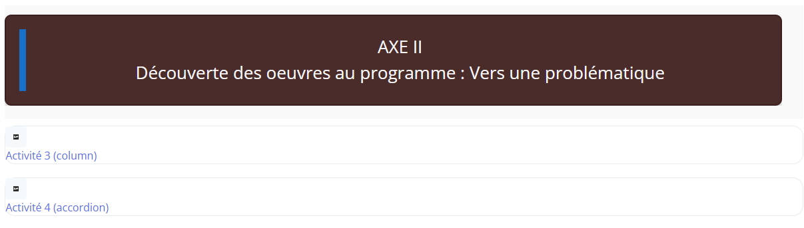
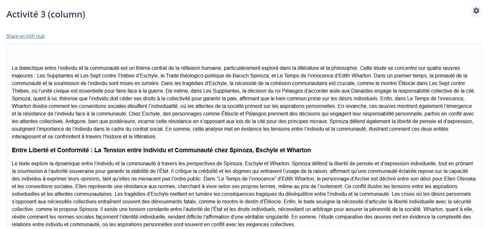
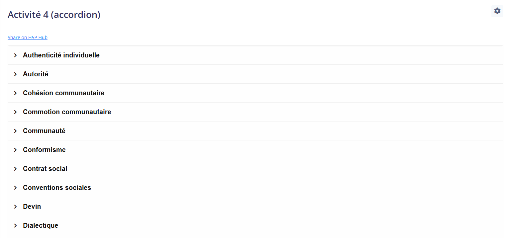

Présentation des œuvres et d’un glossaire, appuyée par deux activités interactives.

Figure 9: Axe II – Présentation des œuvres. Explication : Introduit les œuvres pour explorer les problématiques du thème. Commentaire : Relie les concepts théoriques aux œuvres étudiées.

Figure 10: Activité 3 – Column (H5P). Explication : Organise les informations sur les œuvres en colonnes. Commentaire : Présentation claire et structurée.

Figure 11: Activité 4 – Accordion (H5P). Explication : Glossaire interactif des œuvres. Commentaire : Condense l’information de manière accessible.